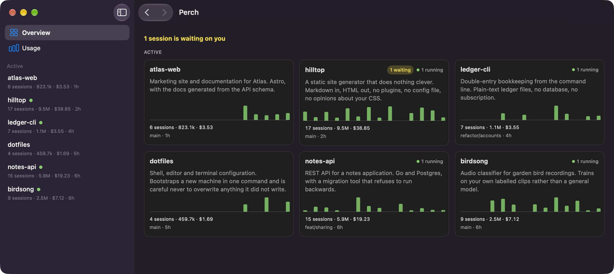

You'll know when something is stuck
waiting on you working idle
Every session shows which of those it is, and the terminal it belongs to. Perch can notify you once when a session has been waiting longer than you're happy with. Some projects are fine to leave sitting, so you can set a different limit on those, or turn it off for them entirely.
